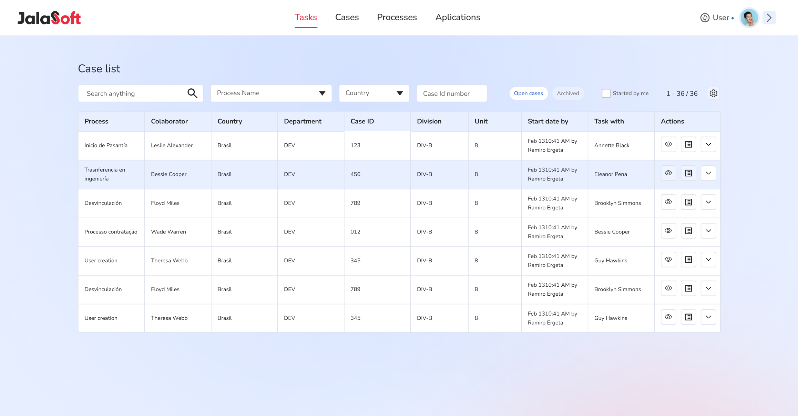
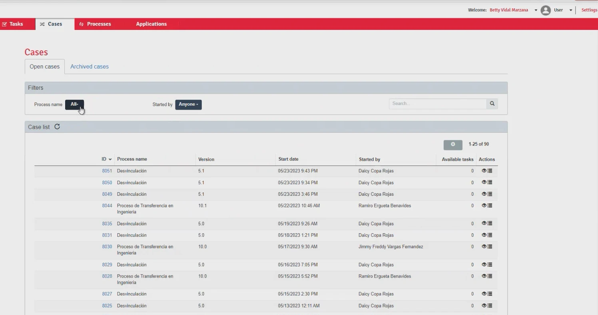
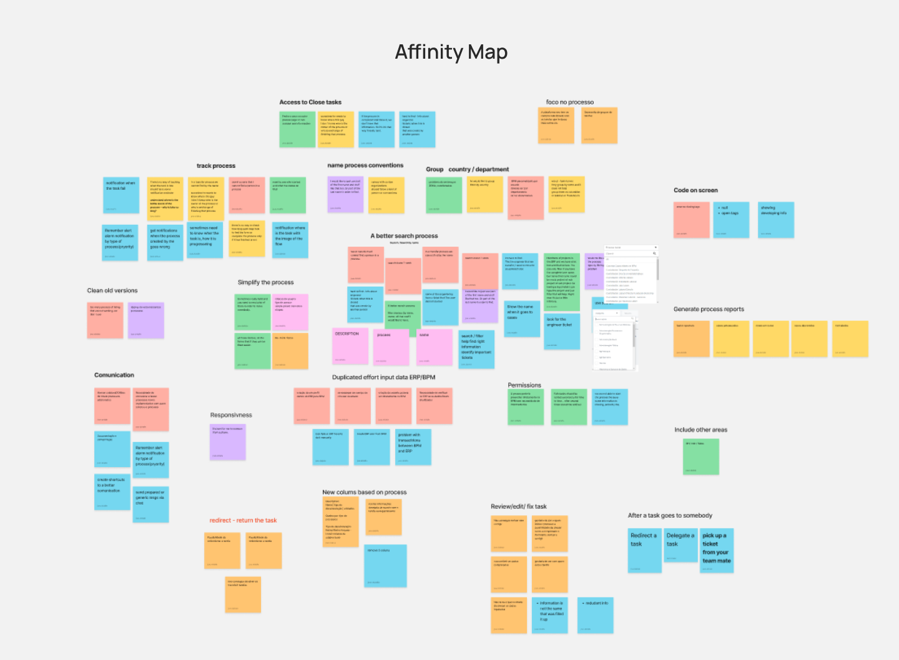
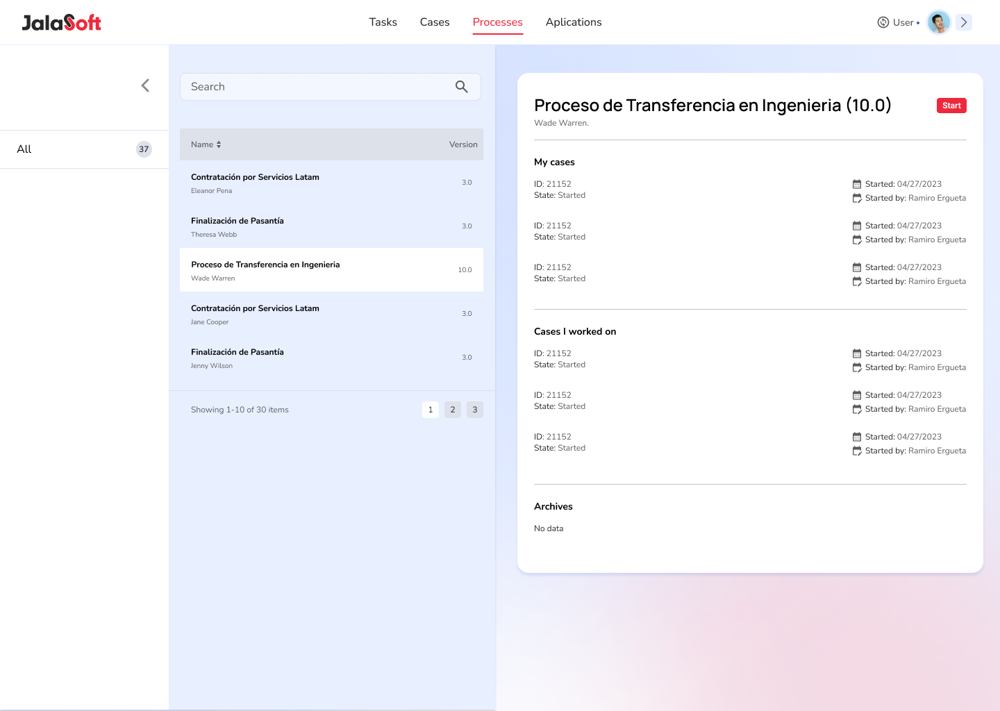
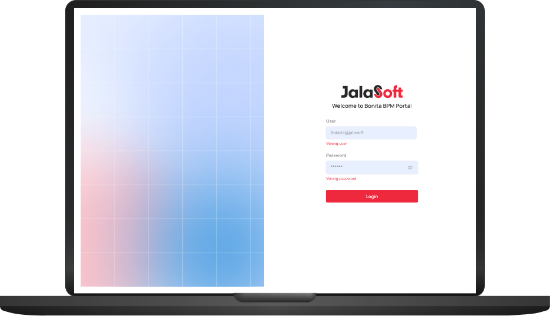

BPM Platform Redesign
Redesigning an internal process platform
The BPM platform is a solution aimed at IT departments and management, which helps in the control of processes for hiring, disassociating, assigning to clients and transferring engineers between units. With personalized flows, task automation, monitoring and integration with management systems, it offers greater efficiency and control, allowing management to coordinate all stages of these processes in a structured way.

Simplifying employee management by transforming processes through UX/UI redesign
Jalasoft ran its people operations — hiring, transfers between units, client assignments, internship starts and disassociation — on a BPM platform built on the Bonita portal. Every request moved through the tool as a case with tasks handed from person to person. It worked, but the interface it shipped with was in the way.
From the UX interviews and affinity map through journey mapping, prioritization, information architecture and every high-fidelity screen — rebuilt on the Jalasoft design system.
- UX Interviews
- Affinity Mapping
- Journey Mapping
- MoSCoW Prioritization
- Information Architecture
- UI Design
- See the design system ↗
A raw portal with unfinished functionality
The platform ran on Bonita's default portal. Screens were dense, inconsistent between processes, and several flows were only half-built — people learned the gaps and worked around them.

Based on UX interviews, we surfaced the needs, pain points and problems
I ran interviews with the people who live in the tool every week — IT, management and process owners. Each need, frustration and blocker was written on a note and grouped, so the redesign started from evidence rather than opinion.

Affinity map — interview notes clustered into themes
Five journeys to walk through
The themes pointed at a handful of end-to-end flows that carried most of the friction. These were mapped step by step to see where tasks stalled or bounced between people.
Sorting the list into must, should and could
With the full list on the table, each item was placed on a MoSCoW map. A process-first case list, search by name and the ability to review, redirect and return tasks landed at the centre as must-haves. Reporting and housekeeping moved to the outer rings.
Click a ring or a group to drop its requests onto the target
Must have7
- Focus on the process
- Access to closed tasks
- New columns based on the process
- Review / edit / fix a task
- Group by country / department
- A better search — search by name
- Redirect / return the task
Should have10
- Process naming conventions
- Communication
- Simplify the process
- No access after a task goes to somebody
- Permissions
- Clean old versions
- Generate process reports
- Duplicated effort: input data in ERP and BPM
- Track the process
- Code on screen
Could have2
- Responsiveness
- Include other areas
Task prioritization — MoSCoW map of every request
Key choicesand why
The reasoning behind the moves that shaped the redesign — not just what was built, but why.
The case list leads with the process
Process, collaborator, country, division and the current task owner sit in one scannable table, with filters for process name, country and case ID.
Review, redirect and return
A task detail with technical details and a comment thread, so a task can be checked, sent back or reassigned without losing history.


One consistent navigation
Tasks, Cases, Processes and Applications in a fixed top bar — collapsed for focus, expanded with account, language and settings.
A process-first tool on the Jalasoft design system
Every screen was rebuilt on Manrope, Nunito and the four-level colour system from the Jalasoft design system — the same foundation used across the company's internal tools.


Hiring process — start and end of the flow

Processes — list, my cases and cases I worked on

Sign-in — Bonita BPM portal, restyled
What Itook away
Starting from evidence
Every screen decision traced back to an interview note on the affinity map. When a request came in mid-project, the map answered whether it was a must or a maybe.
Testing the flows with real users
The redesign leaned on interviews and the process map. With more time I'd have run task-based tests on the hiring and transfer flows before high-fidelity.
The process is the product
People didn't want features — they wanted to see where a case was and move it forward. Leading every screen with the process, not the form, was the whole redesign.
Designing on a platform's constraints
Bonita sets what a portal can and can't do. Learning those limits early — and designing within them — kept the handoff realistic.
From a tool people worked around to one they work in
The redesign gave the BPM platform a single, process-first structure: one case list, one navigation, one search, and task handling that keeps its history. It shares its type scale and colour system with the rest of Jalasoft's internal tools, so it no longer looks like a different product.
See the design system →